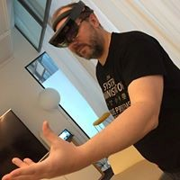
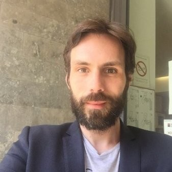

| Plénière | ||
| La Communauté AZUG FR | Cédric Leblond, Marius Zaharia, Aymeric Weinback | Présentation de la Communauté et de ses activités |
| Keynote - Le Cloud pour tous | Alex Danvy | Azure est un terrain d’expression pour tous. Que l’on soit développeur ou IT (Oui, les IT ne sont pas mort !). Que l’on soit débutant ou confirmé. Que l’on soit une startup ou un grand groupe. |
| Usages et Choix d'Architecture | ||
| Architecture moderne dans le Cloud en 2018 | Marius Zaharia | Aujourd'hui, les grands Clouds publics - Azure et AWS - déploient à grande vitesse une diversité de services et de fonctionnalités. Entre Azure Functions, Event Grid, ou Logic Apps, que choisir? Dois-je continuer sur Microservices? Event-Driven? Lambda Architecture? Déployer sur Serverless? Conteneurs ? Modern compute ? Mettons un peu d'ordre dans tout ça. Entrez dans l'architecture moderne, la base de toute la nouvelle vague de services Cloud et pas seulement. Session axée sur l'architecture des applications et de l'infrastructure, des exemples en direct basés sur le Cloud, les perspectives et la feuille de route des services correspondants chez Microsoft Azure. |
| Architecture des solutions IOT dans Microsoft Azure | Chourouk Hjaij | Une solution IOT dans le cloud... C'est une architecture dont on entend beaucoup parler pendant ces jours, mais que se cache-t-il derrière l’architecture d’une telle solution? Objets, connectivité sans fil, passerelles, traitements locaux, puis intégration au SI sont les éléments clés d’une infrastructure IoT. Voulez-vous découvrir une telle architecture avec un cas métier qui fait appel à l'utilisation des nouveaux services Azure pour l’IOT? Azure IOT Hub, Azure Stream Analytics, Time Series Insight vous intéressent et font partie de votre prochain projet sur Azure ? Vous avez entendu parler d’Azure fonction et de la base de données cloud Cosmos DB et vous voulez voir l’utilisation de ces services dans une architecture IOT ? Alors, c'est simple, cette session est pour vous! |
| Le meilleur d’Azure pour votre annuaire d’Active Directory | Guillaume Mathieu |
Azure IaaS, une solution clé en main pour les PRA Active Directory
|
| Gouvernance Azure, comment éviter les écueils | Benoît Sautière | Azure propose de nombreux services mis à la disposition de nos utilisateurs. Dès lors que c'est le consommateur qui souscrit lui-même aux services, le respect de nos règles de gouvernance n'est plus. Pendant cette session, nous allons voir les challenges à relever ainsi que les moyens mis à disposition pour éviter que nous ne perdions le contrôle sur nos souscriptions ainsi que sur nos coûts. Objectif : Maintenir la gouvernance tout en préservant l'agilité que nous offre le cloud. |
| N'oubliez pas les serveurs | François Tonic | Le cloud ne fonctionne pas par magie. Les serveurs ne flottent pas sur le nuage mais ils sont physiquement installés sur Terre. Quelles tendances pour les serveurs et les datacenters ? |
| Bonnes pratiques et mise en œuvre | ||
| Infrastructure Craftsmanship : les bonnes pratiques d’un dev appliquées à l’infrastructure Azure | Sylvain Martinez |
L'époque ou une application se résumait à un serveur applicatif et d'une base données est maintenant lointaine. Automatiser n'était pas un pré-requis, une gestion manuelle pouvait suffir. Avec le Cloud, et les approches micros-services, nous sommes passé d’un applicatif et d'une source de données à n applicatifs, n source de données, n stacks techniques avec une couche de communication. Tout cela avec également n façons d’héberger. Pour faire face à ce produit cartésien, nous avons aujourd'hui la démarche DevOps. Mais au delà d'une collaboration entre les dev et les Ops, il faut aller plus loin. Côté Développeur, nous avons appris à industrialiser et mettre en place certaines bonnes pratiques bien utiles. Nous verrons dans cette session comment les appliquer à l’infrastructure, en utilisant notamment des tests automatisés en Powershell à l'aide de Pester, une chaine de déploiement continue avec VSTS, l'utilisation des templates Terraform …. Nos objectifs pour une heure: gain de temps, automatisation, tests, qualité, idempotence ! |
| Au secours ! Comment tester mes Azure Functions ? | Laurent Grangeau |
Le serverless est le nouveau champ de bataille de différents cloud providers, de l'Internet des objets au Edge Computing. Son adoption est équivalente à celle des conteneurs. Mais comment puis-je tester facilement mes fonctions sans redéployer à chaque fois mon code sur mon cloud provider ? Dans cette session, nous allons utiliser le framework Serverless pour démarrer facilement une nouvelle fonction Azure, et réécrire le code généré pour être simple, bouchonnable et bien sûr testable. |
| Mettez un peu de CI/CD dans vos projets data ! | Guillaume Rouchon |
Intégration continue et déploiement continu ne sont pas réservés uniquement aux projets de développement. Il est tout à fait possible d'appliquer ces principes aux projets data tel que vos bases de données, vos pipelines data factory ou vos modèles analysis services ; c'est ce que nous vous proposons de venir découvrir lors de cette session. |
| Robotique, IA et Azure | Aymeric Weinbach | Suite de la session des 2 années précédentes, un tour d'horizon des technologies IA et Azure adapté à la robotique et à l'IoT avec des vrais morceaux de robot. |
| Enrichir vos applications avec Azure AI services | Houssem Dellai | L'intelligence artificielle et la Machine Learning rendent les applications plus intelligentes et engagent plus l'utilisateur. Mais, implémenter leurs algorithmes require un travail énorme surtout pour les perfectionner. Azure répond à cette problématique! Il fournit des services pour l'analyse des images, vidéos et textes. Le tout est disponible aux développeurs en REST API. Cette session vous introduisez à ces services avec des démo sur des applications mobile permettant de reconnaitre les expressions faciales, l'age, les célébrités, et la détection des objets. |
| Mise en Pratique (Labs) | ||
| Compétition "Racing Game" | Cédric Leblond, Aymerich Weinbach | Les participants auront le code source du jeu qu'ils pourront construire et exécuter dans Visual Studio. Le lab impliquera l'écriture de code pour intégrer le jeu avec Azure blob storage pour stocker les données de la voiture fantôme et le Azure Table Storage pour stocker les temps au tour. Une fois terminé, les participants seront en mesure de voir les temps au tour les plus rapides et de courir contre les voitures fantômes de l'autre. |
| Azure Functions workshop | Cédric Leblond, Aymerich Weinbach |
Créez une application complètement opérationnelle de revues clients dans une architecture serverless En vous appuyant fortement sur Azure Functions et d’autres services d’Azure comme Cosmo DB, Blob Storage et Cognitive Services, vous pourrez créer des fonctions dans votre langage préféré (Java, TypeScript, C#). Destiné aux développeurs et DevOps qui souhaitent avoir un exemple concret d’architecture serveless dans Azure avec une intégration et un déploiement continu de l’application via Visual Studio Team System. |
| IoT Edge et Stream Analytics | Laurent Grangeau | Les sujets abordés comprendront : IoT Device avec un device iot Arduino, IoT Edge module avec déploiement Docker, une analyse avec Stream Analytics et stockage dans Azure Storage. Nous terminerons avec une simulation d'avion! |
| Web App For Containers | Marius Zaharia |
Cet atelier couvrira les différentes phases de migration des applications vers le cloud à l'aide de Web App for Containers.
Les participants apprendront à utiliser Web App for Containers et comment apporter leurs propres images personnalisées. Le Hands-on-Lab vous aidera à construire, exécuter des images Docker localement puis sur Azure à l'aide de Web App for Containers Web App for Containers sur Azure vous permet de :
|
| Alex Danvy | @danvy | Evangeliste Technique chez Microsoft | |
| Aymeric Weinbach | @aymericw | Eleveur de robot, la tête dans les nuages MVP Azure depuis 7 ans, mes sujets de prédilection sont l'IoT et la robotique | |
| Benoît Sautière | @BenoitSautiere | Consultant Public Cloud Solutions chez ABC-Systèmes depuis 2016 et professionnel de l’informatique depuis 1998, je suis progressivement arrivé au cloud public en étant passé par les infrastructures Microsoft (Active Directory, DirectAccess, Hyper-V, DCS, Windows Azure Pack), sujets pour lesquels j’ai été nommé MVP dans la catégorie Enterprise Security en 2009 puis Cloud & DataCenter depuis quelques années. Je travaille sur Azure depuis maintenant quatre ans. | |
| Cédric Leblond | @danvy | passionné d'ALM, DevOps et Agile. Microsoft MVP ALM | |
| Chourouk Hjaij | @Chourouk_HJ | Petite demoiselle geekette jusqu'au bout des ongles, passionnée par les nouvelles technologies, mais également par le sport, la lecture, le business et les voyages. Ingénieure d'affaires, chargée du pôle d'expertise Microsoft chez LK Technology, blogueuse et speaker dans maintes événements... MVP Azure, MCT (Microsoft Certified Trainer). | |
| François Tonic |  | @francoistonic | Rédacteur en chef de Programmez!, de cloudmagazine.fr, de Pharaon Magazine. Journaliste IT depuis 20 ans. Ancien développeur. Geek & maker. |
| Guillaume Mathieu | Je suis Architecte Infrastructure, MVP, P-Seller Enterprise Mobility Security et le Directeur Technique de Metsys. Etant un grand passionné par la sécurité informatique et la gestion des identités, je travaille principalement en mode projet sur les produits de l’écosystème Microsoft. Retrouvez moi sur mon blog (http://msreport.free.fr) ou sur le blog de Metsys (http://www.metsys.fr/blog). Au plaisir d’échanger lors de la session Tester la sécurité de vos annuaires Active Directory / Azure Active Directory. | ||
| Guillaume Rouchon | @grouchon | Guillaume Rouchon a été consultant pendant 16 ans sur les technologies Microsoft et sur le mise en place de processus DevOps. Il est maintenant architecte logiciel chez ALD SA en charge des applications remarketing et des process DevOps. | |
| Houssem Dellai | @houssemdellai | Houssem Dellai est Microsoft MVP et consultant Xamarin depuis 4 ans. Il partage ses recommandations et son expérience dans le développement mobile à travers des vidéos sur Microsoft Channel9 et des blogs sur MSDN Blog et codeproject. | |
| Laurent Grangeau | @laurentgrangeau | Laurent Grangeau est Cloud Solutions Architect chez Sogeti avec plus de 10 ans d'expérience. Ancien développeur Java, il a depuis développé en .NET, avec les principes Agile et DevOps. Il expérimente les fournisseurs de cloud computing depuis plus de 5 ans. Passionné de Docker depuis le début, il l'a expérimenté dans la construction de microservices et de systèmes distribués. Il aime automatiser les choses et exécuter des applications distribuées à l'échelle. | |
| Marius Zaharia | @lecampusazure | Lors du démarrage réel du cloud computing en fin de la première décennie, Marius Zaharia - couramment architecte senior cloud chez Cellenza - a perçu le potentiel énorme de cette technologie. Depuis, il se focalise prioritairement sur la mise en place des architectures cloud. Marius a gagné à la fois une expérience orientée développeur et ingénieur infrastructure, qui lui permet d'avoir une approche complémentaire. Il est également un contributeur actif à la communauté Azure User Group France et organisateur des événements communautaires. | |
| Sylvain Martinez |  | @martinez_sy | Développeur back-end, je travaille chez Arolla depuis 2014. Après quelques années, je me suis spécialisé dans l'architecture orientée Paas. J'aime aussi débattre des questions de performance, de haute disponibilité (redondance, équilibrage de charge, architecture distribuée) et comment sécuriser les plates-formes. Je suis un développeur pragmatique et artisan . Quand je code, je n'oublie jamais pourquoi je le fais....pour apporter de la valeur à nos utilisateurs :-). Mon sujet de prédilection pour 2018 est comment apporter l'artisanat logiciel aux équipes DevOps. |